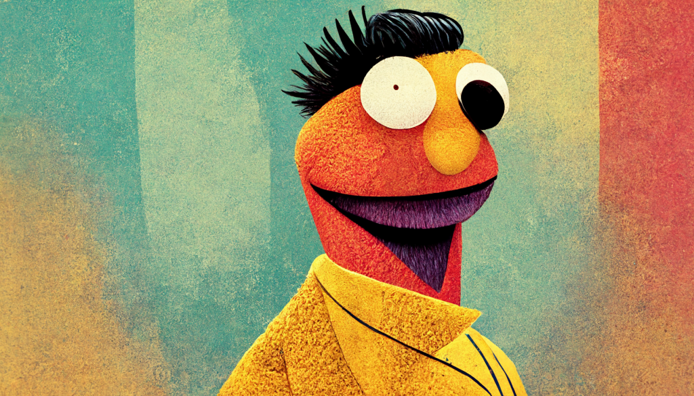

BERT: Bidirectional Encoder Representations from Transformers#
{kind=link}
2018 was a significant year for the field of Natural Language Processing (NLP), as it witnessed a groundbreaking development with the introduction of BERT. The BERT paper [Devlin et al., 2018] presented a novel language representation model that outperformed all previous models across a broad spectrum of NLP tasks.
BERT stands for Bidirectional Encoder Representations from Transformers. It is a deep bidirectional transformer model that is pre-trained on a vast corpus of unlabeled text. The model is designed to predict masked words within a sentence and to anticipate the subsequent sentence in a sequence of sentences. The pre-trained model can then be fine-tuned for various downstream NLP tasks, yielding state-of-the-art results.
BERT builds upon two essential ideas:
The Transformer architecture [Vaswani et al., 2017]
Unsupervised pre-training
During the pre-training phase, BERT is exposed to a massive corpus of unlabeled text. The model learns its weights by predicting masked words in a sentence and forecasting the next sentence in a sequence of sentences.
As a deep bidirectional transformer model, BERT has a complex structure with multiple layers, attention heads, and millions of parameters. Specifically, it has 12 (or 24) layers, 12 (or 16) attention heads, and 110 million parameters. The model does not share weights across layers, which means the total number of distinct attention weights amounts to 144 (or 384) - calculated as 12 (or 24) x 12 (or 16).
The Architecture of BERT#
The core component of BERT is the attention mechanism. Attention allows a model to assign weights to different parts of the input based on their importance for a specific task.
For example, in the sentence The dog from down the street ran up to me and ___, to complete the sentence, a model may give more attention to the word dog than to the word street. This is because knowing that the subject of the sentence is a dog is more important than knowing where the dog is from.
Attention Mechanism#
The attention mechanism is relatively simple. It comprises a function that takes in two inputs: a query and a key. The query represents the part of the input that we want to focus on, while the key is the part of the input that we want to compare the query to. The output of the attention mechanism is a weighted sum of the values of the key. The weights are computed by a function of the query and the key.
Suppose you have a sequence of words \(X\), where each element \(x_i\) is a value of dimension \(d\) (referred to as the value).
In the following example, \(X\) is a sequence of 3 words, each represented by a 4-dimensional vector.
{kind=link}
Fig. 112 Sentence vector#
Attention is essentially a function that takes \(X\) as input and returns another sequence \(Y\) of the same length as \(X\), composed of vectors with the same dimension as the vectors in \(X\).
{kind=link}
Fig. 113 Sentence input and output#
Each vector in \(Y\) is computed by taking a weighted average of the vectors in \(X\). In other words, attention is just a weighted average of the values of the vectors in \(X\). The weights indicate how much the model attends to each vector in \(X\) when computing the output vector.
Attending to Language#
How does attention work in the context of language? To understand this, let’s consider a sentence, the dog ran. We can represent this sentence as a sequence of vectors, where each vector is a word embedding.
{kind=link}
Fig. 114 Word embedding#
A word embedding is a vector representation of a word, consisting of real numbers. Each element of the vector represents a dimension of the word that captures some aspect of its meaning. These aspects can be semantic, syntactic, or even phonetic. For example, the first element of the vector may represent the semantic meaning of the word, the second element may represent the syntactic meaning, and the third element may represent the phonetic meaning of the word.
In practice, word embeddings are not interpretable. We don’t know what each element of the vector represents. However, we can use them to compute the meaning of a sentence.
For example, we can perform arithmetic operations on word embeddings. For instance, we can compute the vector representation of the word cat by adding the vectors of the words kitten and dog, and subtracting the vector of the word puppy.
Attention is also a form of arithmetic operation. Therefore, you can apply attention to word embeddings to compute the meaning of a sentence.
For example, the embedding of the word dog in \(Y\) is computed by taking a weighted average of the embeddings of the words the, dog, and ran in \(X\) with weights of 0.2, 0.7, and 0.1, respectively.
How does this process help the model understand the meaning of a sentence?
To fully comprehend the meaning of a sentence, we need to know the meaning of each word in the sentence. However, we can’t just examine each word in the sentence in isolation - we need to know the context of the word.
The attention mechanism enables the model to focus on the words that are most important for the meaning of the sentence.
Attention in BERT (Easy Version)#
The attention mechanism is a technique used by neural networks to focus on relevant parts of the input data when processing it. In the context of natural language processing, it helps the model pay more attention to important words in a sentence.
Let’s illustrate the attention mechanism with a simple example:
In this example, we have an input sentence “the cat ran”. The attention mechanism assigns weights to each word in the sentence based on their importance. These weights are represented by the “Attention Weights” node in the diagram.
After calculating the attention weights, the model computes an output by combining the input words according to the weights. In this case, the model focuses more on the word “cat” and generates an output accordingly.
Here is another diagram showing the attention mechanism with attention weights:
In this diagram, we have added attention weights for each word in the input sentence. The weights (0.1, 0.8, 0.1) indicate that the model focuses most of its attention on the word “cat” (0.8), while giving less importance to the words “the” and “ran” (0.1 each).
To sum up, the attention mechanism allows a neural network to focus on the most relevant parts of the input data by assigning importance weights to the elements, making it easier for the model to process and understand the input.
Deconstructing Attention#
Let’s dive deeper into the attention mechanism and understand how it computes the weights for each word in the input.
As we know, attention is a weighted average of the values of the vectors in X. The critical aspect here is determining how these weights are computed. To do so, attention relies on queries and keys.
{kind=link}
Fig. 115 Attention query and key#
Queries and keys are similar to word embeddings, like the value vectors we saw earlier. However, they are specifically designed for determining the similarity between words in the input.
The similarity between two words is calculated by taking the dot product of the query and key vectors of those words.
{kind=link}
Fig. 116 Attention query and key dot product#
To transform the dot product into a probability, we apply a softmax function to the dot product. The softmax function normalizes the dot product so that it sums to 1, giving us a probability distribution.
{kind=link}
Fig. 117 Attention query and key softmax#
The softmax values on the right represent the final weights of the attention mechanism. These weights indicate the importance of each word in the input when computing the output vector.
In summary, the attention mechanism calculates the importance of each word in the input by comparing their query and key vectors through the dot product. It then normalizes these dot products using the softmax function to obtain the final attention weights.
The Origin of Query and Key Vectors#
We have seen that attention weights are computed using query and key vectors, but how are these vectors generated?
The query and key vectors are derived from the value vectors. They are calculated by passing the value vectors through two different linear layers.
We can visualize the process of computing attention weights from query and key vectors using the neuron view.
{kind=link}
Fig. 118 Neuron view#
The neuron view demonstrates the computation of attention from the selected word on the left to the entire sequence of words on the right. Positive values are displayed in blue and negative values in orange, with the color intensity representing the magnitude.
Let’s examine each column in the neuron view individually:
Query q: The query vector ‘q’ encodes the word on the left that is paying attention or “querying” the other words. In the example above, the query vector for “on” (the selected word) is highlighted.
Key k: The key vector ‘k’ encodes the word on the right to which attention is being directed. The query vector and key vector work together to determine a compatibility score between the two words.
q×k (elementwise): This is the elementwise product between the query vector of the selected word and each of the key vectors. Although it is a precursor to the dot product (the sum of the elementwise product), it is included in the visualization to show how individual elements in the query and key vectors contribute to the dot product.
q·k: This is the scaled dot product of the selected query vector and each of the key vectors. It represents the unnormalized attention score.
Softmax: This column displays the softmax of the scaled dot product, which normalizes the attention scores to be positive and sum to one.
In summary, the attention mechanism computes attention weights using query and key vectors, which are derived from value vectors by passing them through two distinct linear layers. The neuron view provides a visualization of this process, illustrating the calculation of attention scores and their normalization using softmax.
Multi-head Attention#
BERT incorporates multiple attention mechanisms, called heads, which operate simultaneously. Each head represents a distinct attention mechanism. The output of each head is concatenated and then fed into a feed-forward neural network.
Multi-head attention empowers the model to learn a wider variety of relationships between words in a sentence compared to a single attention mechanism.
In addition, BERT stacks multiple layers of multi-head attention. Each layer of multi-head attention receives the output of the previous layer as input. The output of the last layer of multi-head attention is then fed into a feed-forward neural network.
Through this architecture, BERT can learn highly sophisticated representations of language as it progresses through the deeper layers of the network.
Since the attention heads do not share parameters, each head is capable of learning a different type of relationship between words in a sentence. This feature further enriches the model’s understanding of language and its ability to capture various linguistic patterns.
Pre-training and Fine-tuning#
A key aspect of BERT that we haven’t discussed yet is its two-step training process: pre-training and fine-tuning. This process is essential for BERT to achieve state-of-the-art performance across a wide range of NLP tasks.
Pre-training#
During the pre-training phase, BERT is trained on a large corpus of unlabeled text data using two unsupervised learning objectives: Masked Language Modeling (MLM) and Next Sentence Prediction (NSP).
Masked Language Modeling: In this task, some words in a sentence are randomly masked, and the model is trained to predict the masked words based on the surrounding context. This forces the model to learn contextual representations of words.
Next Sentence Prediction: In this task, the model is given two sentences and is trained to predict whether the second sentence follows the first one in the original text. This helps the model to learn relationships between sentences and capture long-range dependencies.
By training on these unsupervised tasks, BERT learns a powerful language representation that can be fine-tuned for various downstream tasks.
Fine-tuning#
After the pre-training phase, BERT is fine-tuned on specific NLP tasks using labeled data. Fine-tuning involves training the model for a few additional epochs on the task-specific dataset with a task-specific architecture. During fine-tuning, the model’s pre-trained weights are updated to better capture the patterns in the task-specific dataset.
This two-step training process allows BERT to leverage the vast amount of knowledge learned from the large pre-training corpus and adapt it to specific tasks with relatively small amounts of labeled data. As a result, BERT achieves state-of-the-art performance across a wide variety of NLP tasks, such as sentiment analysis, named entity recognition, and question answering.